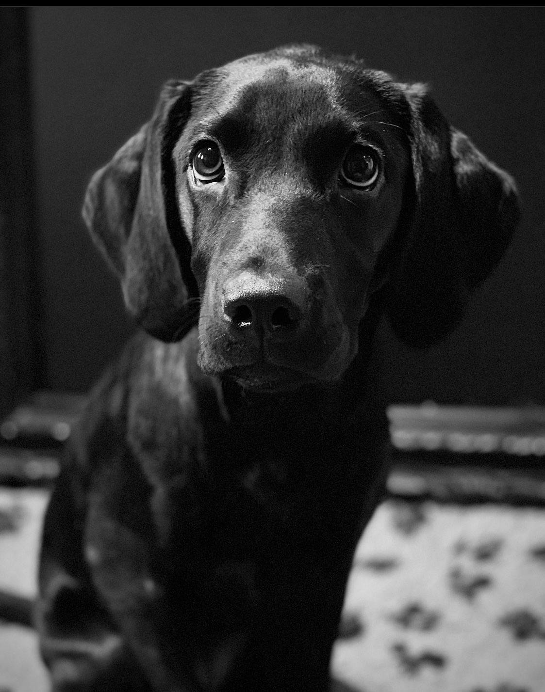
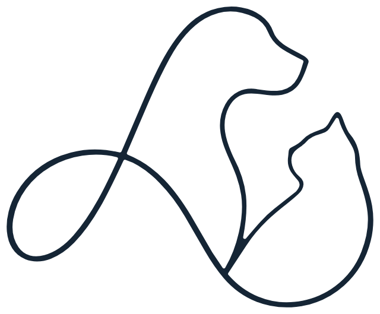
DalénumVeterinärklinik
Välkommen
En trygg plats för dig och ditt djur.
På Dalénum Veterinärklinik erbjuder vi omsorgsfull och professionell vård. Här möter du samma personal vid varje besök, vilket ger både dig och ditt djur en trygg och personlig upplevelse.
Öppettider
Måndag–Torsdag 08.00–17.00
Fredag 08.00–16.30
Adress
Agavägen 50
181 55 Lidingö
Kliniken
Välkommen in på vår klinik.
Här möts du av ett ljust väntrum och en lugn reception. Ta plats i soffan och landa en stund, du och ditt djur, innan vi ses.
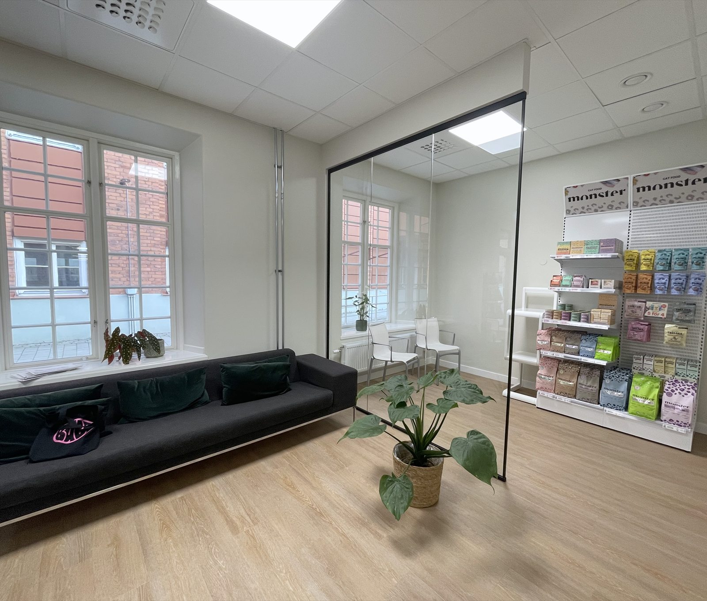
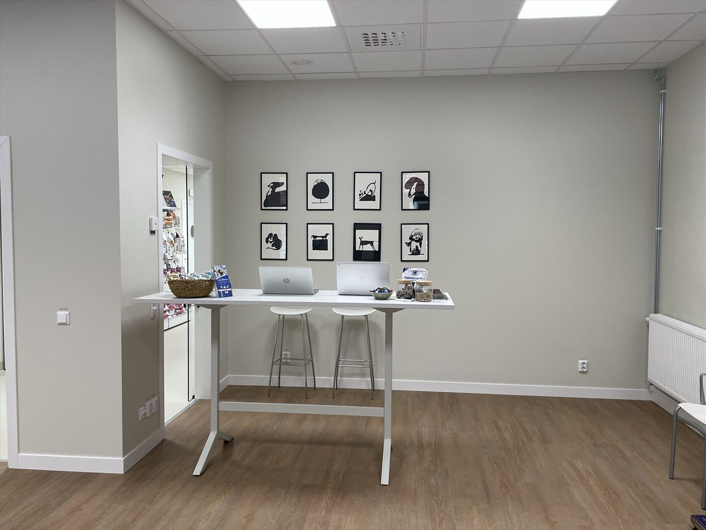
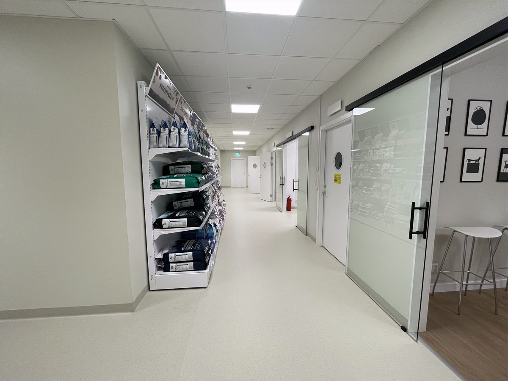
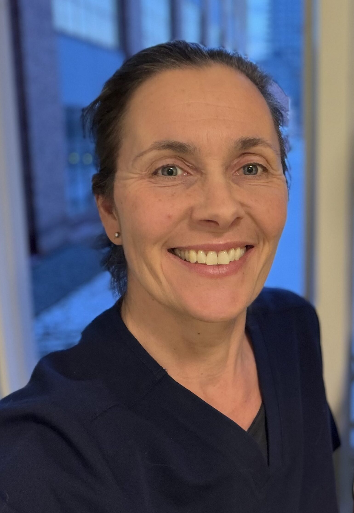
Veterinärvård i privat regi
Veterinärvården så som vi minns den.
För oss är Dalénum Veterinärklinik drömmen om att återskapa veterinärvården så som vi minns den. Nära, personlig och med tid för varje patient och djurägare.
Vår ambition är att ge den bästa, individanpassade vården vi kan, genom att tillsammans med djurägaren fatta beslut för varje enskilt djurs bästa. Vi tror på närhet, lyhördhet och omtanke i varje möte, oavsett om det gäller en rutinkontroll eller en mer avancerad utredning.
Vår vision är att alla djurägare ska ha möjlighet att få veterinärmedicinsk hjälp till sina djur när de behöver det som mest. Med kärlek till djuren och vårt yrke vill vi skapa en trygg plats för både djur och deras ägare.
Vi hoppas att ni kommer att trivas lika bra hos oss som vi redan gör. Välkommen!
Christin & MichelleVeterinärer och klinikägare
Våra tjänster
Vi finns här för ditt djur.
Hos oss kan ni få hjälp med de flesta typer av undersökningar och utredningar – för hund och katt.
- 01ÖgonsjukdomarBedömning och behandling – ett av våra särskilda fokusområden.
- 02HjärtutredningarHjärtultraljud (ekokardiografi) och HCM-screening.
- 03Diagnostik på platsEget laboratorium, ultraljud och digital röntgen.
- 04Förebyggande vårdHälso- och seniorkontroller, vaccination, ID-märkning.
- 05AkutvårdVi tar emot akuta fall – utan extra akutavgift.
Hund och katt.
Från första tassen till gråa nosen.
Vi erbjuder vård med fokus på långsiktiga relationer och hög veterinärmedicinsk kompetens.
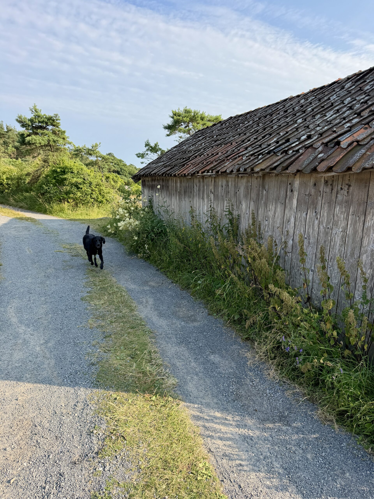
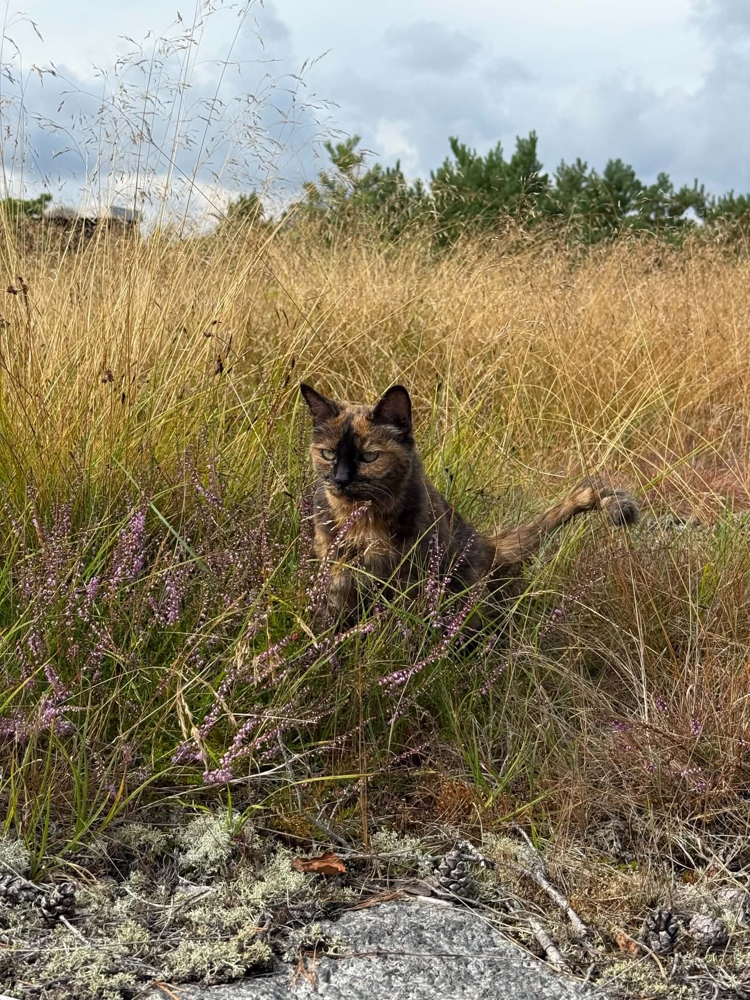
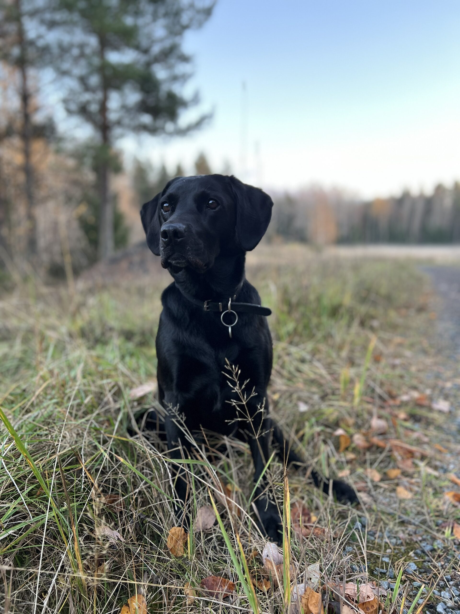
Teamet
Människorna bakom Dalénum.
Vi som äger och arbetar på kliniken har båda lång erfarenhet och bred kompetens inom veterinärmedicin.
Christin
Veterinär och klinikägare
Michelle
Veterinär och klinikägare
Mitt i Dalénum
Din veterinär, nära dig.
Kliniken ligger i Dalénum på Lidingö, bland AGA-områdets gamla industribyggnader i rött tegel och nära vattnet. Här är vi din veterinär i närheten – för dig och ditt djur.
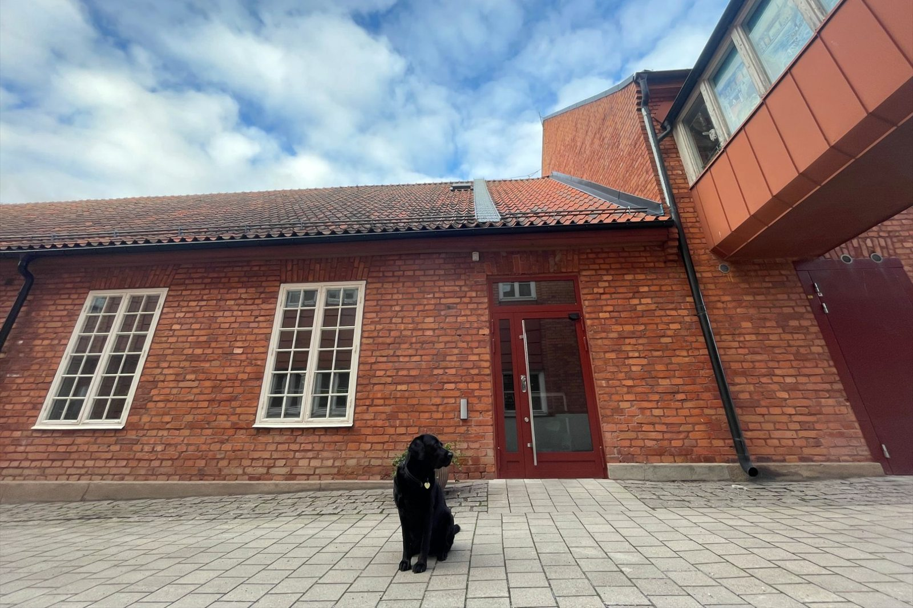
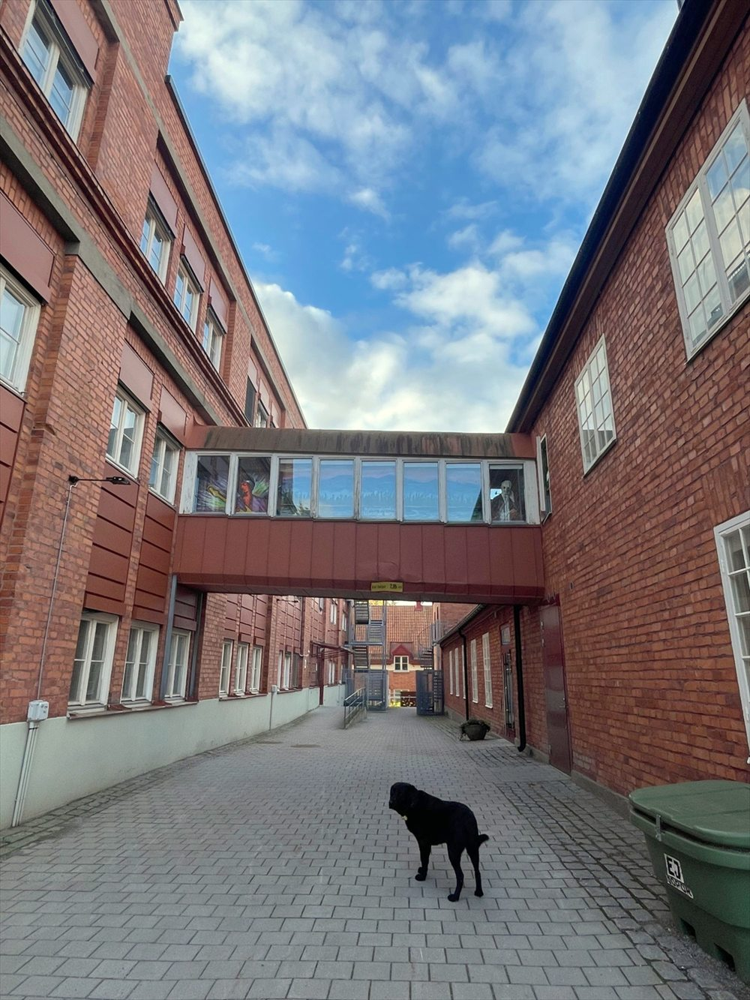
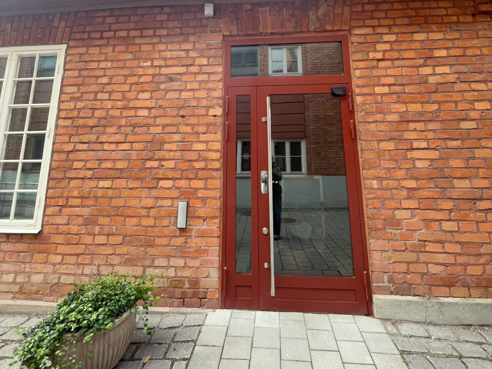
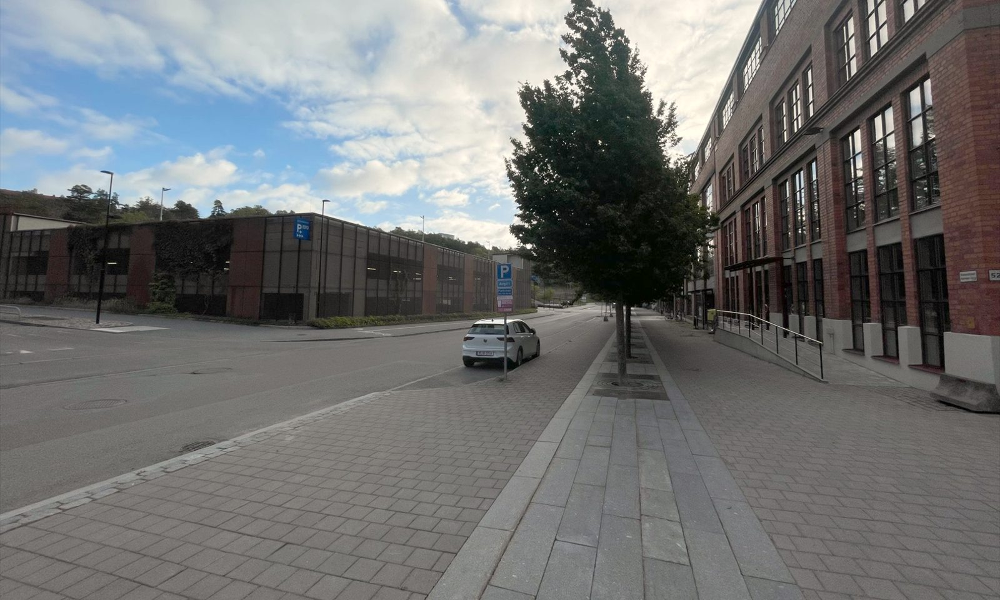
Boka tid & kontakt
Välkommen till oss.
Besöksadress
Agavägen 50
181 55 Lidingö
Öppettider
- Mån–Tors08.00–17.00
- Fredag08.00–16.30
Akut sjukt djur? Ring oss innan du kommer till kliniken, så att vi kan ta emot er på bästa sätt och så snabbt som möjligt.